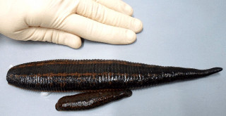

Repeated measures ANOVA

Medicinal leeches are aquatic annelids that feed on
warm-blooded prey. They feed by attaching with their front suckers,
abrading the skin with a rasp-like jaw in the middle of the sucker, and
drinking the blood as it seeps out. Leeches are capable of consuming a
huge amount of blood in a single feeding, several times their own body
weights - you can see the difference in size between a hungry leech and
a fed leech in the picture to the left.
After a feeding leeches rapidly expel the liquid portion
of the blood, and then more slowly digest the solid components over
time. As ectothermic animals, their metabolic rates are quite low, and a
single blood meal can last them for months.
Leeches can also be fooled into eating arginine solution, but arginine
has little nutritive value for leeches. We will see whether leeches fed
on arginine show a different pattern of weight change over time compared
to leeches fed on blood.
Multiple measurements from the same leech are probably not independent
- a big leech is going to have consistently big masses compared with a
small leech. We could handle this level of dependency by using the
individual leech as a random effect.
However, we expect these animals to lose weight over the course of the
experiment, which would probably introduce some serial dependency - that
is, we expect that measurements of the same leech between successive
days will be correlated, because the the weight of a leech on a given
day will be affected by their weight on the day before. We can account
for this serial dependency using repeated measures ANOVA (RMA).
Repeated measures analysis treats time as an ordinal categorical
variable, so our analysis will be very much like a 2-way factorial
ANOVA. Thus, we can ask questions about:
- Whether there are differences in masses between arginine and
blood-fed leeches - this is the between-subjects main effect.
- Whether masses changed over time - this is the within-subjects main
effect.
- Whether the pattern of change over time differed between arginine
and blood-fed leeches - this is the interaction of between- and
within-subjects effects.
There are two different approaches to testing these hypotheses in a
repeated measures analysis - the univariate approach, and the
multivariate approach. If your data meet the assumptions of univariate
RMA it is more statistically powerful than the multivariate approach,
and is the better one to use. However, to use the univariate approach we
need to assume sphericity, which means that the variance has to be the
same between successive time points. If we violate sphericity, but not
too badly, we can still use the univariate approach, but with an
adjustment to the p-values. However, if we violate sphericity badly we
would need to use the multivariate approach, which does not assume
sphericity at all.
Importing the data and graphing the means
1. Start a new project (in a folder called "repeated"), start
a new R script, and import today's data. Download this
file and import the two leech worksheets - the first one (leech)
has the data in the arrangement we need for running a repeated measures
ANOVA, but the other (leeches_stacked) is better for graphing. Call the
first data set leech, and the second leech.stacked.
The weights are expressed as multiples of the initial weight of each
animal, obtained by dividing each weight by the original weight measured
before feeding for the animal. A value of 7 indicates that the leech is
7 times as heavy as it was before feeding, and a value of 1 indicates
that the animal is the same weight as it was before feeding.
2. Make a plot of means. Make a plot of mean weights,
with "food" and "day" as the factors, and "weight" as the response.
First, load ggplot2:
library(ggplot2)
Make the summarized data set you need for plotting - load the Rmisc
library, and then use summarySE() to get the values you need:
leech.summ <- summarySE(leech.stacked, measurevar =
"weight", groups = c("day","food"))
Next, set the global settings with:
leech.gg <- ggplot(leech.summ, aes(x = day, y = mean,
color = food, group = food, ymin = mean - se, ymax = mean + se))
Then add points, error bars, and lines to the plot:
leech.gg + geom_point() + geom_line() +
geom_errorbar(width = 0.1) + labs(y = "Weight")
The final labs() statement changes the y-axis label from "mean" to
"Weight".
As expected, the leeches increase their body weight by a factor of 7-10
when they feed, but you should also see that the blood-fed leeches only
lose weight rapidly on the first day or two as they expel liquid from
the blood, and then lose weight much more slowly after that as they
slowly digest the solid components. The arginine-fed leeches appear to
gain less weight during feeding, and lose weight rapidly for several
days in a row. Since the patterns of change over time are quite
different you should expect a food x day interaction.
Repeated measures analysis in R
There are actually four different ways to run a univariate repeated
measures analysis in R (that I know of, there may be more). They are:
-
Using aov() with an Error() statement.
-
Using Anova() from the car package.
-
Using ezANOVA() from the ez package.
- Using linear mixed effects models, from either the lme or lme4
packages.
We will use the Anova() function from the car package, because it is
flexible and comprehensive. Anova() gives us a test of sphericity, and
provides univariate analysis with and without corrections for violation
of sphericity, as well as multivariate tests. With the output from
Anova() we will have the output we need, whether we meet the sphericity
assumption or not.
The three packages that we aren't going to learn about today are also
interesting. We could use aov(), which is part of base R and doesn't
require any libraries to be installed, but it doesn't provide the test
of sphericity we need. The ez package is designed as a set of "wrappers"
that use existing R commands to do the actual work, but that try to
simplify the input required of the user. The linear mixed effects
packages (lme and lme4) are the preferred platforms for fitting complex
mixed-effects models in R, including repeated measures analysis. If
you're trying to develop your R skills to their fullest, you may want to
try out these different packages - there are lots of tutorials available
with a little Googling.
There are several steps we need to take to use the Anova() function for
repeated measures analysis.
1. Prepare the data for analysis. To use Anova() we
need to provide it with several things:
-
An object that defines the within-subjects design - it's possible
to have treatment levels that we need to account for in the
within-subjects part of the design. We could, for example, have kept
the leeches in cold water for the first four days, and then
increased the temperature for the last three, in which case
temperature would be an additional within-subjects factor. In this
case, since we have only one within-subjects variable (day) we have
a very simple within-subjects design - all we need to do is to make
a vector that lists the time points, with no additional grouping
information. We will call this object "time.factor".
-
A data frame that gives names for the different repeated time
points (which we will call "time.frame").
-
A fitted lm() model that includes the between-subjects effect for
each of the time points (which we will call "time.model"). This is
actually a multivariate linear model, with all of the time points
treated as a response, but Anova() will use the analysis to
construct a univariate RMA from it.
To set up the object that defines the different levels of the repeated
factor, use:
time.factor <- ordered(seq(1,7))
This command generates a sequence of numbers from 1 to 7 and then makes
an ordinal factor out of them. We have seven days of measurements, and
Anova() will use this object to label them. You won't see any output to
the screen because the factor was assigned to time.factor, but if you
type the name of the object its contents will be displayed:
[1] 1 2 3 4 5 6 7
Levels: 1 < 2 < 3 < 4 < 5 < 6 < 7
Next we need a data frame with the names of the time points, which we
can get by converting time.factor into a data frame:
time.frame <- data.frame(time.factor)
Time.frame has only the time.factor in it, but it is now a column in a
data frame. The time.frame object is defining the within-subjects
design, and since we only have a single within-subjects factor (time),
we just need one column with the time points identified.
Next, we need to extract the columns from leech that have the mass
measurements in them. Use the commands:
time.bind <- as.matrix(leech[,3:9])
This command extracts the masses in columns 3 through 9 and assigns
them to a matrix called time.bind.
Finally, we use the lm() command to set up a fitted model - this is not
yet a repeated measures analysis, but the Anova() command will use it to
produce a repeated measures analysis in the next step. To fit the model,
use the command:
time.model <- lm(time.bind ~ leech$food)
The time.model object is actually a multivariate linear model for the
between-subjects factor (food), that also includes all of the basic
quantities Anova() needs to do univariate repeated measures ANOVA.
3. Run the analysis. First, make sure the "car"
library is loaded - it has the Anova() function we need:
library(car)
Generate the analysis with the commands:
leech.rma <- Anova(time.model, idata =
time.frame, idesign = ~time.factor)
summary(leech.rma)
The first command, Anova(), produces the analysis and places the output
into object leech.rma, and the second, summary(), dumps the output to
the screen so you can see it.
4. Interpret the tests of main effects and interactions.
The Anova() command produces a lot of output, because both multivariate
and univariate tests are produced, as well as the sphericity tests we
need in order to decide which output to interpret. To find the
univariate tests, scroll down until you find "Univariate Type II
Repeated-Measures ANOVA Assuming Sphericity". It looks like this:
Univariate Type II Repeated-Measures ANOVA Assuming
Sphericity
SS num Df Error SS den Df
F Pr(>F)
(Intercept)
5435.6 1
160.520 18 609.517 2.470e-15 ***
leech$food
545.5 1
160.520 18 61.165 3.379e-07 ***
time.factor
407.1 6
35.649 108 205.557 < 2.2e-16 ***
leech$food:time.factor 72.2
6 35.649 108 36.445 < 2.2e-16
***
Main effect of food type: I've put the test
of the main effect of food in red type - you can see that it is
significant. The organization of this table is different from what
you're used to - instead of having sub-tables with different error terms
Anova() puts both the numerator and denominator for each test into a
single row of the table. For the test of food type this means that:
- The test of the main effect of food type is labeled leech$food.
- The "SS" column is the sums of squares for food type, and "num DF"
is the degrees of freedom for this between-subjects factor (with 2
food types we have 1 df).
- The denominator for the test of differences in food types is
variation in average masses for each leech. The "Error SS" and "den
DF" refer to variation between leech averages, and number of leeches
minus 2, respectively.
- The "F" column is the ratio of (SS/num Df)/(Error SS/den Df) for the
row.
Since the main effect of food is tested using the averages for each
leech, and doesn't use the repeated measures themselves, the sphericity
assumption doesn't pertain to the test of this between-subjects effect.
However, before we can interpret the main effect of food we need to
look at the food x time interaction to make sure any general statements
we make about effects of food are true at every time point. The table
that Anova() produces doesn't split the test of the main effect of food
from the test of the main effect of time or the time x food interaction,
but if you look at the den DF column you'll see that the denominator
degrees of freedom for both time.factor and the leech$food by
time.factor interaction lines is 108, whereas it was 18 for the main
effect of food. The time and food x time effects use an error term that
is based on the repeated measurements, and thus we have to worry about
the sphericity assumption for those two effects - even though they are
all plopped together in the same table, we can't interpret the main
effect of time or the food x time interaction until we have dealt with
the sphericity assumption.
Main effect of time, and the food by time interaction - the
procedure:
How we test for the main effects of time and the food by time
interaction depends on whether we meet the sphericity assumption of
univariate repeated measures ANOVA. If we fail the Mauchly sphericity
test, our next step also depends on how badly we are violating the
assumption. To summarize, the procedure is:
| Mauchly test results |
Epsilon |
Results to use |
| Passed - sphericity assumed |
Any |
Univariate Type II tests |
| Failed - sphericity not assumed |
Greater than 0.7 |
HF or GG-adjusted p-values |
|
Less than 0.7 |
Multivariate tests |
What does the Mauchly test tell us? Below the ANOVA table is Mauchly's
test of sphericity - it looks like this:
Mauchly Tests for Sphericity
Test statistic p-value
time.factor
0.00015747 3.1978e-19
leech$food:time.factor 0.00015747 3.1978e-19
Like all of our other assumption tests, the null hypothesis for Mauchly
is that we meet the assumption. With a p-value less than 0.05 we fail
the test.
The next block of output gives the epsilon estimates using two
different estimation methods, the Greenhouse-Geisser method and the
Huynh-Feldt method.
Greenhouse-Geisser and Huynh-Feldt Corrections
for Departure from Sphericity
GG eps Pr(>F[GG])
time.factor
0.37125 < 2.2e-16 ***
leech$food:time.factor 0.37125 3.299e-10 ***
---
Signif. codes: 0 ‘***’ 0.001 ‘**’ 0.01 ‘*’ 0.05 ‘.’ 0.1 ‘ ’ 1
HF eps Pr(>F[HF])
time.factor
0.4260826 1.753500e-25
leech$food:time.factor 0.4260826 2.097151e-11
The two different epsilon estimates are different from one another, but
both are below 0.7. If epsilon was 0.7 or bigger we would use one of the
two adjusted p-values presented as our test of time and time x food
interaction, instead of using p-values from they Type II ANOVA table
above. The corrected p-values will generally be bigger than those in the
Type II table - adjusting for a lack of sphericity reduces our power
somewhat.
If you were able to use these corrected p-values, which should you use?
The general advice is to use GG, particularly if epsilon is 0.75 or
less. They tend to be very similar to one another when epsilon is bigger
than 0.75, so the decision is not a very important one - using GG
routinely is fine.
In our case we violated sphericity with an epsilon value that is too
small (< 0.7) to use the GG or HF corrected p-values, so we should
use the multivariate tests instead - the multivariate
approach to testing repeated measures doesn't assume sphericity at all,
so we can use it no matter how small the epsilon value is.
If you search through the mass of output, you'll find a table for each
term in the model that looks like this (they aren't all together, but
I've gathered them together to make it easier for you to see them):
Multivariate Tests: (Intercept)
Df test stat approx F num Df den Df
Pr(>F)
Pillai
1 0.97132 609.5174
1 18 2.4705e-15 ***
Wilks
1 0.02868 609.5174
1 18 2.4705e-15 ***
Hotelling-Lawley 1 33.86208
609.5174 1 18
2.4705e-15 ***
Roy
1 33.86208 609.5174
1 18 2.4705e-15 ***
Multivariate Tests: leech$food
Df test stat approx F num Df den Df
Pr(>F)
Pillai
1 0.772626 61.16487
1 18 3.3788e-07 ***
Wilks
1 0.227374 61.16487
1 18 3.3788e-07 ***
Hotelling-Lawley 1 3.398048
61.16487 1 18
3.3788e-07 ***
Roy
1 3.398048 61.16487
1 18 3.3788e-07 ***
Multivariate Tests: time.factor
Df test stat approx F num Df den Df
Pr(>F)
Pillai
1 0.99258 289.8905
6 13 4.5181e-13 ***
Wilks
1 0.00742 289.8905
6 13 4.5181e-13 ***
Hotelling-Lawley 1 133.79560
289.8905 6 13
4.5181e-13 ***
Roy
1 133.79560 289.8905
6 13 4.5181e-13 ***
Multivariate Tests: leech$food:time.factor
Df test stat approx F num Df den Df
Pr(>F)
Pillai
1 0.965179 60.05718
6 13 9.9717e-09 ***
Wilks
1 0.034821 60.05718
6 13 9.9717e-09 ***
Hotelling-Lawley 1 27.718697 60.05718
6 13 9.9717e-09 ***
Roy
1 27.718697 60.05718
6 13 9.9717e-09 ***
The term that is being tested is identified after the "Multivariate
Tests:" label - there is a test of the intercept, of the main effect of
food, of the main effect of time, and of the time x food interaction. For
each of the terms being tested there are rows labeled Pillai, Wilks,
Hotelling-Lawley, and Roy - each of these is a different multivariate test
statistic. For each one it's possible to calculate an approximate F test
statistic, which is used to calculate the p-value for the test - all of
the approximate F values are the same across all four multivariate test
statistics, so you would only need to present one multivariate test for
each term. Wilks is most commonly reported, so report that row for each
test when you fill in your worksheet.
I told you earlier that you don't need to worry about the sphericity
assumption with respect to the main effect of the between-subjects factor,
food, yet you get a multivariate test for this term. If you look at the
red text in the multivariate test of the food main effect you'll see that
the results are identical to the univariate tests - same numerator and
denominator degrees of freedom, approximate F-value equal to the
univariate test's F-value, same p-value. If you need to use multivariate
tests for the effect of time and food x time it's a good idea to use the
multivariate results for food as well just to avoid unneeded complexity in
explaining your methods, but the results are the same whichever one you
pick.
Post-hoc analysis of an RMA
Post-hoc comparisons in a repeated measures ANOVA can take several
different forms, depending on what we want to know about the results.
With no interaction of between and within-subjects factors
The simplest possibility would be a case in which there are main effects
of the between-subjects factor (food) and/or the withing-subjects factor
(time) but no interaction. In that case we can
do the following:
-
Between-subjects main effect - Tukey comparisons among treatment
groups (if needed - with only two groups we only need to know that the
main effect was significant).
-
Within-subjects main effect - post-hoc comparisons among time points
of interest. Since the data are repeated measurements over time,
paired comparisons should be used. With 7 time points there are 21
pairs of means if we compare all time points to one another. To reduce
the number of comparisons to do we may choose to only compare:
-
Successive time points - we may only want to compare one day
against the next - day 1 to day 2, day 2 to day 3, etc.
-
Against initial conditions, or final conditions - we may want to
find which days are different from starting conditions (comparison
of each day to the first), or how long it takes to return to
baseline (comparison of each day to the final day).
With an interaction of between and within-subjects factors
We have an interaction between food and day, which tells us that the
pattern of change over time depends on the treatment (or, equivalently,
that the amount of difference between the treatments depends on the day).
We still would like to avoid comparing all possible pairs of means,
because with 7 time points and 2 foods we have 14 groups, which gives us
91 means to compare. Many of these comparisons are probably not very
interesting to us, though - the comparison of the first day in the blood
group to the last day in the arginine group is probably not all that
experimentally important. A more restricted, targeted set of comparisons
may be all that we need.
The choice of which comparisons to make depends largely on your research
question, but there are a couple of common approaches.
Comparisons of between-subjects groups at each time point:
If finding the time points at which the treatments differ is important we
can compare the food treatments at each day. Since no comparisons are made
between different days we will only have 7 comparisons to do.
R actually makes this pretty easy - we can use aov() to conduct an ANOVA
for all 7 of the daily mass measurements with a single command. Comparison
of foods within a time point is a comparison between two independent
groups, so paired comparisons aren't needed, and with only two food levels
we can use the p-value on an ANOVA to tell if the treatments are different
(no Tukey tests required unless there are 3 or more levels to compare).
Use the command:
summary(aov(time.bind~food, data=leech))
The time.bind object has the masses for each day, using it as the
response variable tells R to run the analysis once for each of the columns
in time.bind. This command will thus give you a separate ANOVA table for
each day of masses in time.bind. Bear in mind that with 7 tests you should
not consider anything greater than 0.05/7 = 0.0071 to be significant.
Comparison between time points within each group:
Instead of comparing between the treatment groups, we might want to know
which time points are different within each of the two food types.
Still, we have a choice to make...
- We may only be interested in comparing sequential differences (that
is, differences between d1 to d2, d2 to d3, d3 to d4, etc.) for
blood-fed animals, and the same sequence for arginine-fed animals.
- We may be interested in the time points that are different than
starting conditions, in which case we should compare days 2 through 7 to
day 1.
Regardless of which we choose, we will to use paired t-tests for these
comparisons instead of ANOVA's or two-sample t-tests because we're
comparing two sets of measurements on the same individuals on different
days.
We will use a process that will give us the p-values, degrees of freedom,
and test statistics that what we want, but it will take a couple of steps.
1. Calculate the differences between sequential time points.
The data are in an object called leech, with the leech at each day in
columns 3 through 9. We can calculate differences between successive time
points with:
leech[,3:8] - leech[,4:9] -> time.diffs
Since the column references are all different by 1, this command will
subtract column 4 from 3, column 5 from 4, and so on, and put the
differences in time.diffs. We can make these differences a data frame,
with the command:
data.frame(time.diffs) -> time.diffs
If you look at time.diffs (by typing time.diffs at the command prompt)
you'll see that the labels are carried over from the first set of columns
- they are the labels for the first through the 6th day, rather than
labels that indicate which two days are being compared. We can fix this by
using both of the days being compared in the column labels:
colnames(time.diffs) <-
paste(colnames(leech[,3:8]), colnames(leech[,4:9]), sep = ".")
The paste() command combines arguments together, using the separator
identified with "sep" statement. We are using the column names for columns
3 to 8, and combining them in pairs with the column names in 4 to 9, using
a period as the separator. This will help us keep track of what is being
compared as we assemble our results.
2. Split the data by food type. We want to split the
data in two by food group, which we can do with:
split(time.diffs, leech$food) -> diffs.split
The split() command takes a data frame we want to split, and a factor
that has the groups we want to split by, and makes a list
with data sets for each of the groups. A list is another R data type,
which has named elements that can hold other data types (a data frame, or
a matrix, for example). If you type the name:
diffs.split
you will see you have two named sections, one for $blood, and one for
$arg, with the differences for each. You can extract a named element by
name using the syntax:
diffs.split$arg
to get the arginine differences as a group. To pull out just the
differences for d1.d2, you would change this to:
diffs.split$arg$d1.d2
3. Conduct the paired t-tests. Now that we have a list
with our two data sets, we can get our t-tests done using a single command
that applies a function to each named element of a list. Use the command:
lapply(diffs.split, function(i) apply(i, MARGIN = 2,
FUN = t.test)) -> diffs.ttests
This command actually uses two different versions of the apply function
nested inside of one another to get all of the tests that we want done in
one command. If you have done any programming, this command functions as a
nested loop - the way that it works is:
- The outer function is lapply(), and this is used to extract the data
from each named element of diffs.split one at a time and apply a
function to them. The first argument is the name of the list
(diffs.split). From this list, lapply() extracts the first named element
($arg) and passes it to the function specified as the second argument.
The function is specified as function(i) apply(). At this point, control
is passed to the apply() function.
- apply() is used to apply a function (identified by FUN =) to either
the rows (if MARGIN = 1) or columns (if MARGIN = 2) of a data frame or
a matrix. Our differences between days are in columns, so we're using
MARGIN = 2. The first time through the apply() function will pass the
differences in the first column of diffs.split$arg (i.e. the
differences between d1 and d2) to the function specified by FUN.
- The FUN = t.test statement causes the function
t.test(diffs.split$arg$d1.d2) to be run. Running t.test() on a single
column of data without any other arguments gives us a one-sample
t-test of the mean of the column of data against 0. A one-sample
comparison of differences against a hypothetical mean difference of 0
is a paired t-test, so this will give us paired t-tests of the
differences between successive days.
- apply() then moves to the next column, which has the differences
between d2 and d3, and performs a t-test on those differences. This
continues until all of the columns in diffs.split$arg are processed,
at which time apply() passes control back to the lapply() function.
- lapply() moves to the second named element, $blood, and passes it to
apply() to conduct all of the t-tests on the columns in $blood. When
apply() completes the t-tests for all the columns of differences in
$blood, the complete set of t-test results are returned and put into
diffs.ttests.
We are going to take advantage of R's ability to apply functions
repeatedly to lists, data frames, or matrices again later in the semester
- it is a little confusing at first, but the apply() family of functions
make it possible to do a lot of repetitive work with just a few commands.
4. Report the results. If you look at the output by
typing:
diffs.ttests
you'll see that diffs.ttests is a list of t-tests, each labeled by the
food type first, and then by the day. For example, the label $arg$d1.d2 is
labeled first by the food type, and then by the days being compared. The
labeling is hierarchical - meaning, if we used the command:
diffs.ttests$arg
we get all of the t-tests done on the arginine-fed leeches, labeled by
the days compared.
It's a long list, and it would take some patience and care to record each
p-value, test statistic, and degrees of freedom for all of the tests.
Fortunately, there is a better way.
First, you should understand that the output of a t-test is also an R
object made up of several named elements. We can see what the names are
for the arginine d1.d2 t-test by typing:
names(diffs.ttests$arg$d1.d2)
You'll see the following:
[1] "statistic" "parameter"
"p.value" "conf.int"
"estimate"
[6] "null.value" "alternative"
"method" "data.name"
We don't need all of these values, we only need the test statistic,
degrees of freedom, and p-value, which are the named elements "statistic",
"parameter", and "p.value". To extract p-values from all of the tests in
the diffs.ttests list, we would use:
sapply(diffs.ttests, function(i) sapply(i, function(y)
y$p.value)) -> pvals
The sapply() function is just like the lapply() that you used above, but
it returns a matrix instead of a list. This command is actually two
sapply() functions nested inside one another, and it works like this:
- The outer sapply() uses diffs.ttests as its first argument. It passes
the first named element, $arg, to the function defined in its second
argument. The function(i) statement says that the data passed on to the
function is going to be called i within the function definition.
- The function that is defined is another sapply(). This second sapply()
uses i as its first argument, which will be the $arg t-tests the first
time through. The $arg t-tests are thus passed to the inner sapply()
function.
- The inner sapply() applies a function to the first named section
within i, which will be d1.d2. The named sections used for the inner
sapply() are called y - so, y will be the d1.d2 t-test initially.
- The function defined in the inner sapply() simply extracts the
p-value from the t-test result contained in y.
- The inner sapply() moves on to the next t-test result (d2.d3), and
extracts its p-value. This continues until all the t-tests in $arg
have been processed, and then control is passed back to the outer
sapply() function.
- The outer sapply() moves on to the second named element, $blood, and
repeats the process with the $blood t-tests.
- Once the $blood p-values have been extracted, the outer sapply()
returns the p-values for both $arg and $blood. These are assigned to an
object called pvals.
If you type pvals at the command line, you'll see a matrix of p-values,
with row labels indicating the days being compared, and column labels
indicating the food type.
Similarly, the test statistics can be obtained by changing the function
definition for the inner sapply():
sapply(diffs.ttests, function(i) sapply(i, function(y)
y$statistic)) -> tstats
And, the degrees of freedom can be obtained with:
sapply(diffs.ttests, function(i) sapply(i, function(y)
y$parameter)) -> dfs
You now have p-values in an object called "pvals", test statistics in an
object called "tstats", and degrees of freedom in an object called "dfs".
To combine all of these statistics into a single data frame, you can use:
data.frame(p = pvals, t = tstats, df = dfs)
The row labels show the comparison, and the column labels identify the
statistic - R automatically appended arg or blood to the t, df, and p
column names because data frames can't have two columns with identical
names.
You can change the ordering of the columns if you want to put the
arginine and blood stats together. First put the comparisons into an
object:
data.frame(p = pvals, t = tstats, df = dfs) ->
ttest.results
Then to re-order the columns you just need to use the command:
ttest.results[ , c(1,3,5,2,4,6)]
This command is just the name of the ttest.results object, with square
brackets used to refer to the rows and columns it contains. The first
entry is the row identifier, and leaving it blank gives us all of the
rows. The second entry is the column identifier, and using c(1,3,5,2,4,6)
specifies the ordering of the columns to be reported.
If you want to challenge yourself... try modifying this procedure to
compare days 2 through 7 to day 1. This is the kind of comparison you
would do if your first measurement was of initial conditions, and you
wanted to identify the point at which the masses because different from
the starting point.
Optional - testing trends over time
Rather than testing for differences between means, you
may be happy to just know what the nature of the change over time is
(linear, quadratic, cubic, etc.). This unfortunately is not perfectly
straightforward using the car library - it does include a function
called linearHypothesis() that lets us test for different time trends,
but the syntax is complicated and not at all intuitive. If this is
something you might want to do on your own data, the following will walk
you through the process. If not, you can skip this step.
We will just test the trends for the main effect of time. First, we
need to create the "model matrix" that has the orthogonal polynomial
weights (remember, these take the place of dummy codes for ordered
factors, and model the different time levels as a linear trend + a
quadratic trend + a cubic trend...up to one less than the number of
factor levels). Do that with the command:
model.matrix(~time.factor) -> time.model.matrix
If you type the name of the object, time.model.matrix, you'll see a
matrix with a column for an intercept, and then columns with
coefficients for each type of trend - rows are the seven days.
To test the linear trend in the data, we would use the command:
linearHypothesis(time.model, "(Intercept) = 0",
P=time.model.matrix[ , 2, drop=FALSE])
This command uses the time.model object we already created for Anova();
time.model is the within-subjects design of the analysis. Our polynomial
weights are centered on 0, so testing if the intercept is equal to 0 is
equivalent to testing the trend. The argument P=time.model.matrix[ , 2,
drop=FALSE] tells linearHypothesis() to use the second column in our
time.model.matrix in the hypothesis test. The second column is where the
linear weights are, so this will test for linear trend. To test for
quadratic trend, you can just recall the command (with the up arrow key),
and change the 2 to a 3 in time.model.matrix[ , 3, drop = FALSE].
Random effects
The second half of this assignment deals with random effects. We will use
data on the gestation lengths and masses of a selection of mammals from
different taxonomic groups, which you will find in the worksheet called
"mammal" in the Excel spreadsheet you downloaded - import the data into a
data frame called "mammal".
If you open the file to view it, you will see that each row is a species
of mammal, with columns indicating the taxonomic order, family, genus, and
species (remember, a species name is a combination of its genus and a
specific epithet - the genus column has the genus name, and the species
column has the specific epithet). There is also a column for the mass (in
grams) and the gestation length (in months) for each species. The natural
log of mass and gestation length are in the columns loggest and logmass -
both variables tend to be strongly right-skewed, and log transformation
improves normality.
All taxonomic levels group organisms together that are related, but
higher levels in the taxonomic hierarchy encompass more distantly related
organisms than lower levels. All of the species in our data set are in the
class Mammalia - they are all mammals. The first level that is recorded in
the data set is order - the orders in the data set are:
- Artiodactyla - hoofed animals with even numbers of toes, such as cows,
sheep, pigs, giraffes, and hippopotami
- Primates - monkeys, gorillas, lemurs, humans
- Rodentia - mice, squirrels, capybaras, beavers
- Carnivora - dogs, cats, mongooses, skunks
We expect the species within an order to be more similar to one another
than they are to species in other orders, but since order is a fairly high
level in the hierarchy the species within an order can be fairly different
from one another.
The next level below order is family, and the data set we are working
with has two families within each order:
- The families within Artiodactyla are the Bovidae (animals with
permanent horns, like cows, sheep, and antilope) and the Cervidae
(animals with antlers that are shed each year, like deer and elk)
- The families within Primates are the Cebidae (new-world monkeys like
capuchins and squirrel monkeys) and the Cercopithecidae (old-world
monkeys)
- The families within the Rodentia are the Caviidae (guinea pigs, cavys,
and capybaras) and the Muridae (mice, rats)
- The families within the Carnivora are the Canidae (dogs, wolves,
foxes) and the Felidae (cats such as lions, tigers, and ocelots)
We would expect less variation between species that are members of the
same family than between species that are members of the same order,
because species within the same family are more closely related on average
than those in the same order. The same basic expectation would hold for
members of the same genus - there are three genera for each family and two
species per genus in this data set. The two species in the same genus are
quite closely related, and should be fairly similar in many ways (size,
physiology, genetic composition, etc.).
To make the analysis simple, I selected an equal number of families
within each order, genera within each family, and species within each
genus. As such, we are working with a sample of the possible members of
each taxonomic level, and we will thus treat each level as a random effect
- the purpose of the analysis will not be to test for differences between
these particular orders, families, and genera, but to see how much
variation there is between random samples of orders, families, and genera
of mammals. Once we have our ANOVA table, we will estimate the variance
components for each level, so we can see if our expectation of decreasing
amounts of variation as we go from order through genus is upheld.
We will start by analyzing the log of gestation length:
1. Fit a nested ANOVA for log gestation length using the command:
aov(loggest ~ Error(order + family + Genus), data = mammal)
-> mammal.loggest.aov
You will get a scary red warning message about the Error() term being
singular - don't worry, this has to do with the fact that we do not have a
crossed (factorial) design, and there are many combinations of the three
different levels that don't occur. In spite of this warning message the
calculations are done correctly for a nested ANOVA.
2. Use the summary() command to get your ANOVA table - it should look
like this for log gestation:
Error: order
Df Sum Sq Mean Sq F
value Pr(>F)
Residuals 3 21.42
7.14
Error: family
Df Sum Sq Mean Sq F
value Pr(>F)
Residuals 4 2.668
0.667
Error: Genus
Df Sum Sq Mean Sq F
value Pr(>F)
Residuals 16 1.104
0.06902
Error: Within
Df Sum Sq
Mean Sq F value Pr(>F)
Residuals 24 0.2109 0.008789
3. Calculate the variance components for each level - Order, Family,
Genus, and Species. The expected mean squares for each level are:
| Random effect |
Expected mean squares |
Estimated by: |
| Order |
nmsσ2order + nmσ2family
+ nσ2genus + σ2error |
Residual for Error: order
|
| Family |
nmσ2family + nσ2genus
+ σ2error |
Residual for Error: family
|
| Genus |
nσ2genus + σ2error |
Residual for Error: Genus
|
| Species |
σ2error |
Residual for Error: Within
|
To calculate the variance components for each taxonomic level you need to
isolate its σ2 - for example, to isolate σ2order
you would need to subtract MSfamily from MSorder,
and then divide by the number of data points in the mean for each order.
With n = 2 species per genus, m = 3 genera per family, and s = 2 families
per order, there are 12 species used to calculate the mean for each order.
The calculation would thus be:
σ2order = (MSorder - MSfamily)/12
=
(7.14 - 0.667)/12 = 0.539
With six species included in each family, the calculation for family is:
σ2family = (MSfamily - MSgenus)/6
= (0.667 - 0.06902)/6 = 0.0996
Each genus has two species recorded, so the calculation is:
σ2genus = (MSgenus - MSerror)/2
= (0.06902 - 0.008789)/2 = 0.0301
Since each row of the table is a different species the σ2error
term is also σ2species. The σ2error
component is estimated directly by MSerror, which is equal to
0.008789, with no algebra needed!
4. Now repeat steps 1 to 3 using logmass.
That's it! Answer the questions on the assignment sheet, and upload your
R output in a Word file to the class web site.